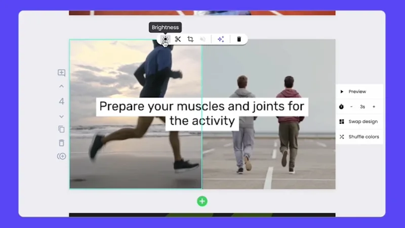

周三下午那篇探店稿，半小时就变成了抖音视频
公众号长文刚发出去，老板就催短视频平台同步——以前这条链路要五天，这次我把一个链接贴进了编辑器，半小时搞定。
周三下午的那个微信
周三下午三点十七分，我刚把那篇三千字的咖啡店探店稿发完公众号，喝了口冰美式，手机就震了。
老板的消息：「这篇同步发抖音和视频号，今天下班前给我。」
我盯着屏幕沉默了三秒。不是写稿的问题——稿子里的人物、场景、数据点全齐了，三千字干货满满。问题是把这些文字变成视频这一步，过去半年里我用过的路子只有两条：要么自己开剪映一条条剪素材，一条视频两小时起步；要么找外包，等五天排期加两百块预算。
今天下班前？自己剪肯定赶不及，外包那边昨天才刚发过去另一个客户的活，排到下周了。
我正对着空白的剪映时间线叹气，对面工位的小李探过头来，把她的笔记本转过来给我看——一个白底绿字的编辑器界面，左边是场景列表，右边是自动生成的配图，底部时间线已经铺好了七八段。
「你试试把公众号链接贴进去。」她说，「我上周那篇公司周年的稿子就是这么转的，从贴链接到出片，二十分钟。」
把链接丢进去之前我没抱希望
坦白说，文字转视频这类工具我之前是存疑的。印象里那些AI生成的视频要么是一堆素材图轮播加机器念稿，要么是模板感太重——套进去什么内容都长得一样，发到短视频平台用户划两下就关了。
但小李把lumen5官网的编辑器界面给我看了两眼，分场逻辑是真的有东西：它不是把整篇稿子一股脑丢进去念，而是自动把文字拆成了一个个场景，每个场景只取最核心的一两句话做上屏字幕，然后自己在素材库里找匹配的图。我那篇三千字的探店稿，它拆成了十一个场景，从开头的咖啡店门头特写，到中间的手冲过程，到结尾的豆子产地，每个场景配的图和那段文字讲的内容是对得上的。
我半信半疑地注册了账号，把公众号那篇稿的链接贴进了导入框。
等待的那三十秒，我刷新了三次预览。
它比我想的要聪明，但也不是全自动的
三十秒后预览出来，我承认第一反应是「还行」，第二反应是「但还不够」。
AI生成的分场逻辑确实没跑偏——开头场景抓到了「藏在巷子里的社区店」这个钩子，配了一张窄巷门头的图；中间讲手冲环节的那段，自动拆成了水温、研磨度、冲泡手法三个场景；结尾推荐豆子的部分，把三个产地各做成了一个场景。字幕也不是硬念稿，它提炼成了短句上屏，看着不累。
但素材图的构图有几张不太对——有个场景配的手冲壶图是横版的，而且杯子切了一半进画面；还有一张产地介绍的图，豆子的颜色偏暗，在短视频小屏上可能看不清。
我正准备开修图软件，小李凑过来又敲了一下键盘：「选中素材看上面。」
我点了那张构图不对的手冲壶图，画面上方浮了一条工具条——亮度、裁剪、翻转、旋转，全都在。裁剪框拖两下，把横版改成竖版构图，主体杯子占满了画面；亮度拉了一档，豆子那张图颜色鲜亮起来。整个过程没跳出编辑器，连文件都没导出去。

品牌这件事，以前是个体力活
调完素材，我往下拉了拉时间线，想看看字幕样式。默认的白字黑底其实也能用，但我们公司的短视频有自己的品牌色——墨绿色加米黄色字体，logo要贴在右上角。以前每次做视频这一步最烦：先在设计稿里取颜色值，再进剪映把每个场景的字幕样式手动调一遍，logo也得逐个拖位置。十一个场景调下来，光样式就得十分钟。
这次我在编辑器左上角的品牌套件里存了一份公司的配置——墨绿色、米黄字体、logo 水印位置，一行一行填完，点了保存。然后回到视频时间线，选中所有场景套用套件，样式一下子全变了，跟我们之前做的那批视频一模一样。
这一套我只配了一次，以后不管是探店稿、产品介绍还是公司通知的文字稿，转成视频都能直接套。多品牌的代理公司给每个客户存一套，切客户的时候选一下就行，不用每个客户的视频都重新配一遍品牌元素。后来翻了lumen5文档才知道，套件还能配合自定义模板锁定关键设置分发给团队成员，品牌风格不会跑偏。
下载的时候我多看了一眼码率
最后一步是出片。渲染完成后从下载入口拿文件，给了两个选项，普通视频下载成 MP4，Story 格式的才会打 zip 包。我选的是常规格式，直接下了 MP4，文件大小十八兆——一分钟的视频，1080p 分辨率。
按短视频平台的上传要求，竖版视频是 9:16，我刚才在画幅里已经选对了，不用再转码。要是当时选了横版的话，编辑器里有个多画幅复制的功能，可以一键出对应的竖版或方版，省得我再找转码工具。
半小时，和过去五天的对比
从贴链接到下载文件，总共用了二十七分钟。
我把视频发给老板，三分钟后收到回复：「可以，发吧。」
坐在那里愣了一会儿，我才反应过来这意味着什么。过去半年里，我经手过十七条短视频，平均交付周期是五天——写稿一天、外包排期三天、修改往返一天。这十七条视频里，我还得反复跟外包确认品牌色对不对、logo 位置准不准、字幕有没有念错。
现在这个链路变成了：文字内容 → 贴链接 → 自动分场配图 → 我花十分钟微调构图和品牌 → 下载。中间的素材编辑、品牌样式、出片格式这些环节，以前散落在三四个不同的软件里，现在都在同一个编辑器里搞定了。
当然，它不是万能的。要是我想做那种电影感的转场特效，或者纯口播游戏实况，这个工具派不上用场——它从一开始就是为有文字底稿的内容复用设计的。但对我来说，公众号文章转短视频这个场景，刚好踩在它的能力范围内，而且踩得很实在。
我把下载好的 MP4 拖进抖音后台，配上话题标签，点了发布。三点十七分收到老板的消息，四点零一分，视频上线了。
写在最后
这次用下来，有两个细节我记了很久。一个是素材微调不用跳出编辑器——选中素材直接调裁剪和亮度，这个设计看着小，但省了好几次导入导出的麻烦。另一个是品牌套件可以预存配置，团队里所有人做视频都能基于同一套品牌框架，颜色字体 logo 不会跑偏。
如果你的工作也是持续产出文字内容、然后需要以视频形式铺到各个平台，这个工具值得试一试。对于内容运营和自媒体来说，它把「文字转视频」这条链路从五天缩短到半小时，中间的体力活基本都自动化了。